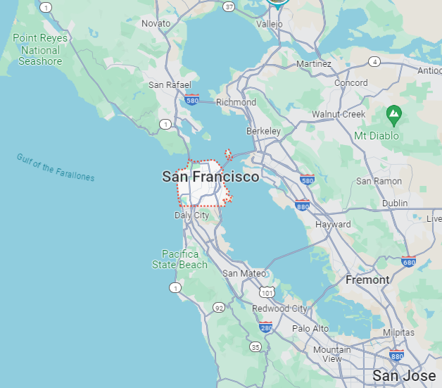
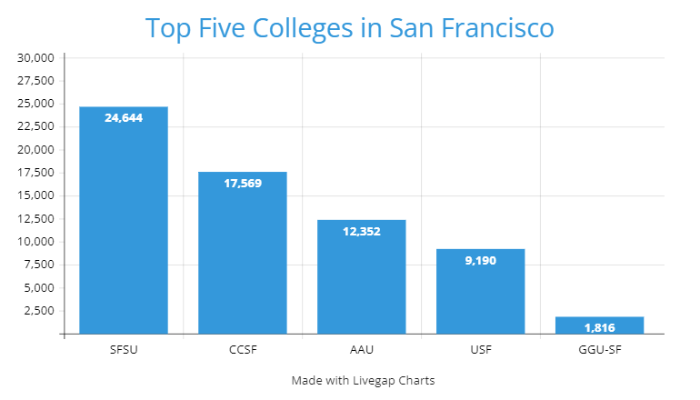

Quick Facts
- Population: 808,437 (2022)
- Classification:
- Urban: 100%
- Rural: 0%
- Region: San Francisco
- Incorporated: April 15th, 1850
- Median Household Income (2022):
- California: $91,551
- San Francisco: $136,692
| 2019 | 2020 | 2022 | |
|---|---|---|---|
| Murders | 40 | 48 | 55 |
| Assaults | 2,514 | 2,162 | 2,589 |
| Thefts | 39,887 | 25,319 | 35,530 |
Top Five Colleges in San Francisco
by Full-Time Enrollment- San Francisco State University
- City College of San Francisco
- Academy of Art University
- University of San Francisco
- Golden Gate University-San Francisco
